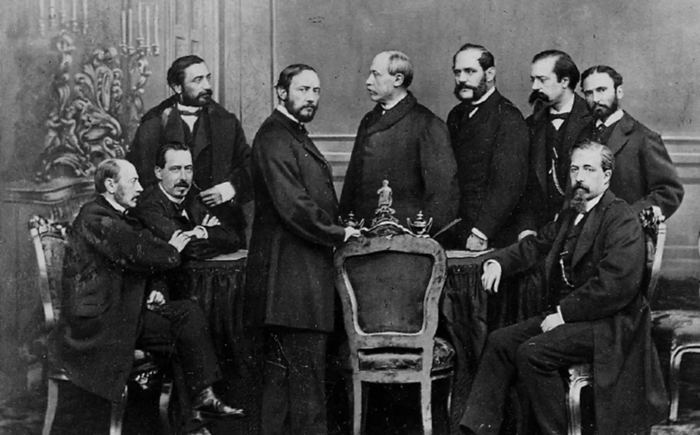

En el Mexico del siglo XIX significaba defender la preservacion de las instituciones tradicionales heredadas del periodo colonial.
Consideraban que el orden, la religion y la autoridad eran indispensables para mantener la estabilidad del pais.
Esta diferencia provoco conflictos que marcaron la historia como:
Inicio con la promulgacion de la constitucion de 1857.
Inclusion de una monarquia en el pais.
Ser liberal o conservador era una postura que definia la forma de organizacion del Estado.
| Centralismo | Federalismo |
|---|---|
| El presidente tenia amplia facultad para tomar decisiones. | Existia un equilibrio entre los poderes federales y estatales. |
| Buscaba mantener el orden mediante un gobierno fuerte y centralizado. | Favorecia la participacion politica de las entidades federativas. |
| Era apoyado principalmente por los conservadores. | Era defendido principalmente por los liberales. |
| Consideraba que un gobierno central evitaba la fragmentacion del pais. | Consideraba que la autonomia fortalecia la democracia y representaba mejor la diversidad regional. |
| Se establecio en diversos periodos como durante las Siete Leyes. | Se instauro con la Constitucion Federal de los Estados Unidos Mexicanos de 1824 y se consolido con la Constitucion Politica de la Republica Mexicana de 1857. |
